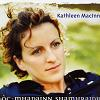

Celtic Lyrics Corner > Artists & Groups > Kathleen MacInnes > Òg-Mhadainn Shamhraidh > An Dà Fheannaig
|  | An Dà Fheannaig |
| Credits : | Traditional; lyrics by Seonaidh MacIlleathain; arranged by Kathleen MacInnes, Iain MacDonald & Donald Shaw |
| Appears On : | Òg-Mhadainn Shamhraidh |
| Language : | Gàidhlig (Scottish Gaelic) |
| Other Versions : |
"
Three Ravens
" on Malinky's album 3 Ravens
" The Twa Corbies " on Old Blind Dogs' album Close To The Bone |
| Lyrics : | English Translation : |
| Chuala mi 's mi là air sgrìob | As I was walking all alane |
| Dà fheannaig bha ri bròn neo-bhinn | I heard twa corbies makin' a mane |
| Is tè dhiubh gairm leis an dìth | The tane unto the ither did say |
| "Cà 'n-diugh an tèid sinn shireadh bìdh?" | "Whar sall we gang and dine the day?" |
| Tha thall air cùl a' ghàrraidh fhàil | In ahint yon auld fail dyke |
| Tighearn air ùr-chur chun a' bhàis | I wot there lies a new-slain knight |
| 'S chan fhiosrach aon gu bheil e ann | And nane do ken that he lies there |
| Ach a chù, 's a sheabhag 's a chèile dhonn | But his hawk, his hound an' his lady fair |
| Tha 'n cù air falbh a shealg an fhèidh | His hound is tae the huntin' gane |
| 'S tha 'n t-seabhag an tòir air eòin an t-slèibh | His hawk tae fetch the wild-fowl hame |
| Tha leannan eil' aig a chèile phòst' | His lady's tain anither mate |
| 'S nis teannamaid fhìn ri cuirm is ròic | So we may mak oor dinner swate |
| Suidhidh tu fhèin air chàimh a chlèibh | Ye'll sit on his white hause-bane |
| Criomaidh mi fhìn a ghorm-shùil shèimh | And I'll pike oot his bonny blue een |
| Is càiridh a chùl òr-bhuidh' trom | Wi' ae lock o' his gowden hair |
| Ar nead nuair bhios e cinntinn lom | We'll theek oor nest whan it grows bare |
| Is mòr na chaoineas air a sgàth | Mony a one for him makes mane |
| Ach cha tig fios a bheò no bhàis | But nane sall ken whar he is gane |
| Is thar a chnàmhan loma, bàn | O'er his white banes, whan they are bare |
| Bidh sèideadh gaoithe gu Là Bhràth | The wind sall blaw forever mair |